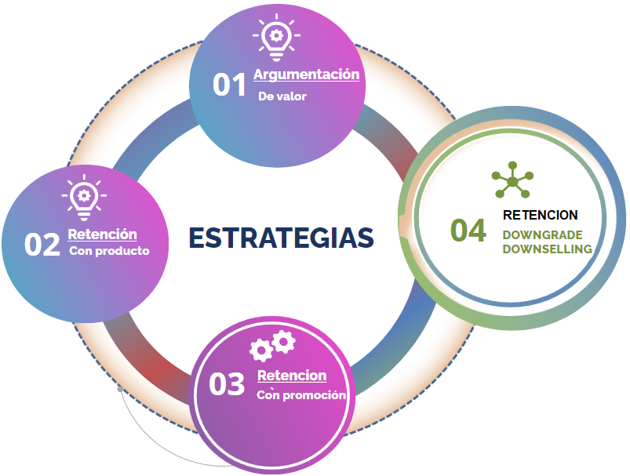

Dar valor a los servicios activos: Enfatizar los servicios que el cliente ya posee, tanto los principales como los adicionales, destacando sus beneficios, como la calidad o el ahorro a largo plazo. Para clientes que pagan en efectivo, resaltar la facilidad y seguridad del débito automático, además de beneficios como descuentos y evitar deudas e intereses por mora.
Presentar un nuevo servicio o producto que resuelva una necesidad del cliente.Añadir un incentivo (descuento, meses gratis, etc.) para hacer más atractiva la propuesta.
Para aquellos clientes que solicitan la baja total, es fundamental ofrecer los descuentos de manera escalonada, haciendo énfasis en el ahorro que estos representan. Es importante explicarles que estos descuentos se aplican sobre el abono total básico de su servicio. Además, estos descuentos solo pueden ser ofrecidos si el cliente menciona explícitamente que desea dar de baja el servicio.
Retención con Downgrade
Se busca lograr la retención del cliente a través de la reducción de servicios adicionales, como la baja de Pack Star, HBO, Fútbol, HD o decodificadores adicionales. También puede implicar la reducción de la velocidad de internet o cambiar el servicio de HD a SD (definición estándar).
Retención con Downselling
Esta estrategia se aplica cuando el cliente inicialmente solicita una baja total, pero se le convence de mantener uno de los servicios principales.
Es importante informarle sobre la pérdida de la bonificación Oro/Plata al dar de baja Ba o Catv , junto a la agregación de un costo por mantenimiento, informa también que el servicio de Telefonía se encuentra bonificado.